Pilgrim's Pride Corporation (PPC)
Ficha da base
| Fonte dos dados | Cotações diárias do Yahoo Finance (formato da biblioteca yfinance, com colunas Dividends e Stock Splits). O arquivo data/Pilgrim_s_Pride_Corporation.csv traz o histórico completo da PPC desde 1987. O arquivo usado na modelagem, data/Pilgrim_s_Pride_Corporation_2.csv, junta a PPC com os fechamentos de TSN, XLP, CALM e da taxa USD/MXN no mesmo calendário. |
|---|---|
| Variável-alvo | Close: preço de fechamento diário da ação da Pilgrim's Pride, segunda maior processadora de frango dos EUA (controlada pela JBS), ajustado por dividendos. O ajuste está confirmado: os quatro dividendos especiais do período, entre eles US$ 6,30 em 03/04/2025, não geram saltos na série. |
| Unidade | US$ por ação |
| Frequência | Diária, em dias úteis (pregões da bolsa americana) |
| Período coberto | 25/07/2013 a 16/09/2026 |
| Nº de observações | 3.430 dias úteis: 2.573 no treino (25/07/2013 a 05/06/2023) e 857 no teste (06/06/2023 a 16/09/2026) |
| Horizonte de previsão definido | Bloco de teste de 25% da série (857 pregões), percorrido em walk-forward com reajuste a cada 50 pregões. Os modelos estatísticos (SARIMAX e Holt-Winters) preveem de 1 a 50 pregões à frente a partir de cada origem. Random Forest e XGBoost preveem 1 pregão à frente, porque suas features usam o preço da véspera (ver página 6). |
| Justificativa da escolha da base | É uma série financeira longa (13 anos) e de comportamento oposto ao de uma série climática: não estacionária, dominada por tendência e choques, praticamente sem sazonalidade. Ela testa como os quatro modelos se comportam quando o padrão sazonal é fraco e o nível muda de regime. As ações do mesmo setor (Tyson Foods, Cal-Maine) e o ETF de consumo básico (XLP) são candidatas naturais a variáveis externas, e a PPC tem relevância direta para o grupo J&F. |
Gráfico da série-alvo
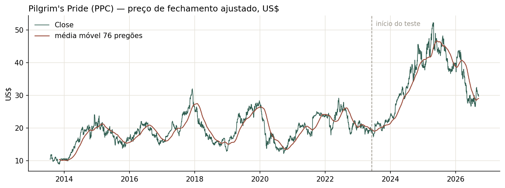
O preço médio no período é de US$ 22,86 (mínimo de US$ 8,91 em 2013 e máximo de US$ 52,18 em 23/04/2025). Há dois regimes bem diferentes:
- 2013 a 2023: ciclos sem direção. Depois da alta de 2013–2014 (de ~US$ 10 para ~US$ 20), o preço oscila entre US$ 12 e US$ 32 em ciclos de 1 a 3 anos, típicos do ciclo de margem da indústria de frango. Picos em 2017 (US$ 32) e no fim de 2019 (US$ 28), e quedas fortes em 2018 e em março de 2020 (pandemia). As médias anuais ficam entre US$ 16,5 e US$ 23.
- 2024 a 2026: mudança de regime. A partir do início de 2024 o preço dobra (média anual de US$ 20,4 em 2023 para US$ 33,3 em 2024 e US$ 42,9 em 2025), chega ao máximo histórico em abril de 2025 e devolve boa parte da alta em 2026 (US$ 26,5 em junho). Quase todo esse movimento cai no bloco de teste, e 489 dos 857 pregões de teste ficam acima do maior preço visto no treino (US$ 31,98).
Não há ciclo anual nem semanal visível. A volatilidade também muda: o resíduo do STL tem desvio-padrão abaixo de US$ 1 em 2015–2016 e acima de US$ 3 em 2025–2026 (página 4).
Variáveis externas
Dicionário de variáveis
| Variável | Descrição | Unidade | Fonte |
|---|---|---|---|
TSN_Close | Fechamento da Tyson Foods, maior concorrente da PPC em frango | US$ | Yahoo Finance |
XLP_Close | Fechamento do ETF Consumer Staples Select Sector SPDR (setor de consumo básico dos EUA) | US$ | Yahoo Finance |
CALM_Close | Fechamento da Cal-Maine Foods, maior produtora de ovos dos EUA (mesma cadeia de ração e proteína avícola) | US$ | Yahoo Finance |
Volume excluída | Volume negociado da PPC no dia | ações | Yahoo Finance |
USD_MXN excluída | Taxa de câmbio dólar/peso mexicano (a PPC tem operação no México) | MXN por US$ | Yahoo Finance |
Open, High, Low excluídas | Abertura, máxima e mínima da própria PPC no dia | US$ | Yahoo Finance |
Correlação com Close no treino. No nível: TSN 0,70, XLP 0,49 e CALM 0,34. Na variação diária (1ª diferença), que é a medida mais honesta para séries com tendência: TSN 0,51, XLP 0,40 e CALM 0,24. Volume (−0,07) e USD/MXN (−0,08) praticamente não se correlacionam com a variação diária do preço e foram descartados. Open, High e Low são do próprio dia e quase idênticos ao fechamento, então também ficaram de fora.
Disponibilidade na data de origem da previsão
| Variável | Disponível no futuro? | Tratamento adotado |
|---|---|---|
TSN_Close, XLP_Close, CALM_Close no SARIMAX |
indisponível — vazamento | O notebook usa o valor real do próprio dia previsto, inclusive para os 50 pregões à frente de cada origem (forecast(exog=test[EXOGS])). Esses preços não são conhecidos na origem da previsão. O efeito do vazamento foi medido com o mesmo ARIMA(2,1,2) sem exógenas (páginas 7 e 8). |
TSN_Close, XLP_Close, CALM_Close no Random Forest e XGBoost |
disponível (defasada) | Toda a tabela é deslocada 1 dia (shift(1)) antes de criar lags, diferenças e janelas. A linha do dia t só usa fechamentos até t−1. |
| Holt-Winters | — | Univariado: não usa variáveis externas. |
Como as quatro séries são preços negociados ao mesmo tempo, o fechamento de TSN, XLP e CALM no dia t só é conhecido no fim do pregão t, junto com o próprio Close que se quer prever. No SARIMAX, isso significa usar o movimento do setor no dia para explicar o movimento da PPC no mesmo dia. Isso explica bem, mas não é previsão. Uma versão operacional teria duas opções: usar as externas defasadas (no máximo até a origem do bloco) ou usar previsões delas feitas na origem.
Gráficos das variáveis externas
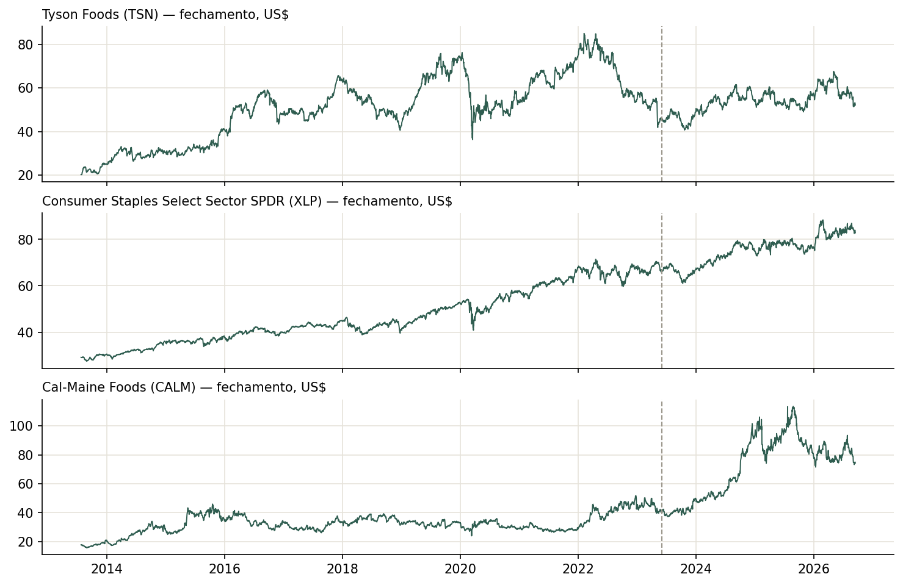
Limpeza e exploração
Diagnóstico
| Valores ausentes | Nenhum NaN em nenhuma das 10 colunas. |
|---|---|
| Duplicidades | Nenhuma data ou linha duplicada. |
| Irregularidades temporais | A série tem exatamente os 3.430 dias úteis (seg–sex) do período, sem lacunas. Mas a bolsa americana fecha em feriados: 124 dessas linhas (Natal, Ano-Novo, Ação de Graças etc.) não existem no histórico original da PPC. Nelas, todos os preços repetem o dia anterior e o Volume é 0, ou seja, foram preenchidas com o último valor (forward-fill) ao alinhar as séries num calendário de dias úteis. |
| Valores atípicos (outliers) | Método: regra do IQR na variação diária do preço (no nível, o IQR só marcaria a alta de 2024–2025 como atípica, o que é uma mudança de regime, não um erro). • Close: 212 variações diárias fora do IQR (6%), o esperado para retornos de ação, que têm caudas pesadas.• Maiores quedas: −US$ 7,49 em 01/05/2025, −US$ 3,66 em 16/10/2014 e −US$ 3,63 em 03/10/2024. Maior alta: +US$ 3,95 em 13/08/2021. • Todas são movimentos reais de mercado, confirmados no histórico original, e foram mantidas. |
Decisões de limpeza e transformação
1. Corte em 2013. Os notebooks filtram a partir de 01/01/2013. Na prática, a base combinada começa em 25/07/2013, que é a primeira data com todas as externas disponíveis.
2. Exclusão de colunas. Open, High e Low saíram porque são do próprio dia (vazamento direto). Volume e USD_MXN saíram porque têm correlação desprezível com a variação do preço. O Volume ainda tem os 124 zeros artificiais dos feriados.
3. Feriados mantidos com forward-fill. As 124 linhas preenchidas ficaram na série (3,6% dos dias). Elas mantêm a frequência regular que SARIMAX e Holt-Winters exigem, mas criam dias com variação exatamente zero e 124 "previsões" fáceis no teste. Removê-las e usar um calendário de pregões seria mais fiel.
4. Sem transformação do alvo para os modelos. O preço entra em nível em todos os modelos, sem log. No SARIMAX, as quatro colunas são padronizadas (StandardScaler ajustado só no treino) e a previsão volta para US$ antes das métricas. A diferenciação fica a cargo do próprio modelo (d = 1 no ARIMA). Como a volatilidade cresce com o nível do preço (página 4), um log-preço seria uma alternativa a testar.
5. Dividendos. A série já vem ajustada, então os dividendos especiais de 2015, 2016 e 2025 não aparecem como quedas artificiais.
Decomposição STL
Escolha do período sazonal
Pregões diários não têm um período sazonal óbvio. O notebook 1 testou m de 2 a 100 com STL robusto na 1ª diferença padronizada do preço (arquivo data/base_escalonada.csv) e escolheu o m de maior força sazonal: m = 76, com FS = 0,195.
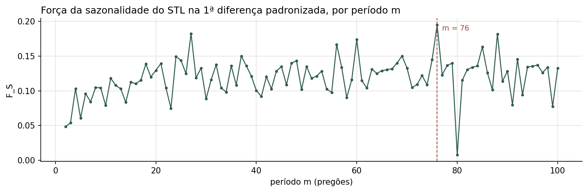
A curva não tem um pico claro: vários períodos sem relação entre si (27, 56, 60, 76, 88) ficam entre 0,17 e 0,20, e a mediana é 0,12. O ciclo semanal (m = 5) dá só 0,06. Um padrão sazonal real apareceria como um pico isolado, e seus múltiplos também se destacariam. O m = 76 (cerca de 3,5 meses de pregões) é, portanto, o máximo de uma curva ruidosa, e não um ciclo econômico identificado. Mesmo assim, ele foi mantido em todos os modelos para que os quatro usem o mesmo período.
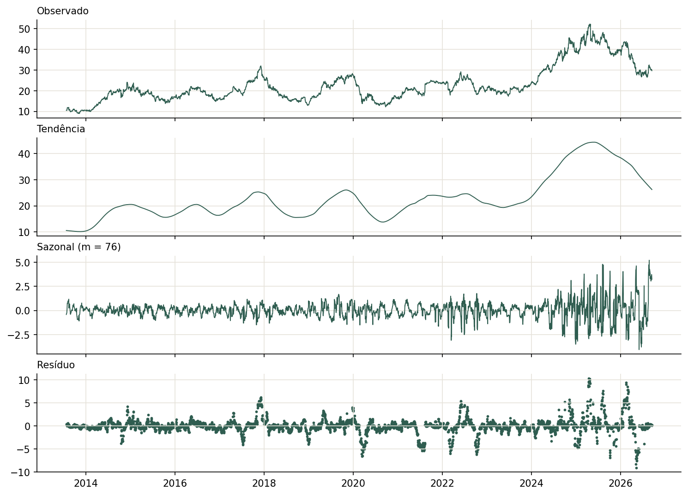
period = 76 e robust = True.Tendência
| Período | Comportamento | Nível da tendência |
|---|---|---|
| 2013 – 2014 | Alta forte saindo do mínimo (11/11/2013) | 10,1 → 20,6 US$ |
| 2015 – 2023 | Ciclos de 1 a 3 anos sem direção: picos em 2017 e 2019, vales em 2018 e 2020 | entre ~14 e ~26 US$; 23,3 US$ no fim de 2023 |
| 2024 – mai/2025 | Alta contínua até o máximo da tendência (29/05/2025) | 23,3 → 44,4 US$ |
| jun/2025 – set/2026 | Queda contínua | 44,4 → 26,3 US$ |
A tendência concentra quase toda a variação da série: os ciclos de vários anos e a mudança de regime de 2024 aparecem nela, e não na sazonalidade. Ela muda de direção várias vezes, o que favorece modelos que se adaptam ao nível recente (passeio aleatório, α alto no Holt-Winters) em vez de extrapolar uma inclinação fixa.
Sazonalidade
A componente sazonal com m = 76 não tem um formato que se repita: é uma oscilação irregular de alta frequência, com desvio-padrão de US$ 0,86, que cresce com o nível do preço (0,3–0,5 US$ até 2018, 1,6–2,0 US$ em 2025–2026). Ela está absorvendo parte do ruído e dos choques de curto prazo, e não um ciclo recorrente.
Resíduo
O resíduo é estacionário (ADF p ≈ 2e-14), mas não é ruído branco: tem blocos de semanas com o mesmo sinal, nos momentos em que a tendência suavizada não acompanha um movimento brusco (fim de 2017, mar/2020, 2022 e 2025–2026). Ele também é heterocedástico: o desvio-padrão anual vai de 0,6 US$ (2016) a 3,4 US$ (2026). 100 pontos (2,9%) passam de 3 desvios-padrão.
Força da sazonalidade / tendência
FT = max(0, 1 − Var(Rt) / Var(Tt + Rt)) e FS = max(0, 1 − Var(Rt) / Var(St + Rt)).
| Métrica | Série | Valor | Interpretação |
|---|---|---|---|
| Força da tendência | Preço em nível | 0,96 | Muito forte: a série é praticamente tendência + ruído. |
| Força da sazonalidade | Preço em nível | 0,00 | Nula: a componente sazonal varia menos que o resíduo. |
| Força da sazonalidade | 1ª diferença padronizada | 0,195 | Fraca: mesmo no melhor m, a sazonalidade explica menos de 20% da variação diária. |
Estacionariedade e ordem de diferenciação
| Série | ADF (p-valor) | KPSS (estatística / p-valor) | Conclusão |
|---|---|---|---|
| Preço em nível | 0,33: não rejeita raiz unitária | 4,82 / < 0,01: rejeita estacionariedade | Não estacionária (os dois testes concordam) |
| 1ª diferença | ≈ 0: rejeita raiz unitária | 0,05 / > 0,10: não rejeita estacionariedade | Estacionária: d = 1 |
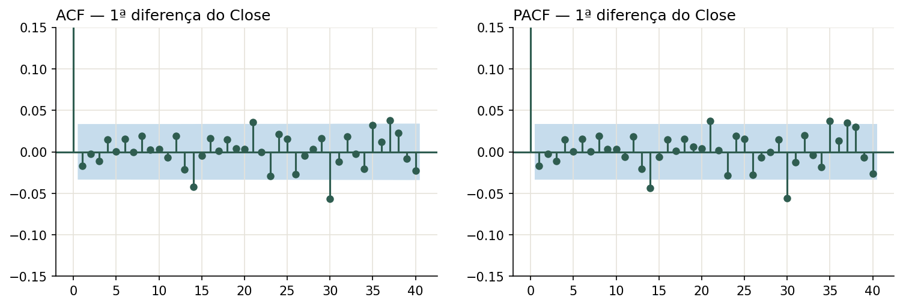
Depois de diferenciada, a série é quase ruído branco: a autocorrelação no lag 1 é −0,017, e nenhum dos 10 primeiros lags passa de 0,02 em módulo. É o comportamento esperado de um preço de ação (próximo de um passeio aleatório). A previsão ingênua (amanhã = hoje) é, portanto, uma referência muito difícil de bater, e a força dos modelos tem de vir das variáveis externas, não da dinâmica do próprio preço.
Feature engineering
Features construídas
As features são calculadas sobre historico = dados.shift(1), ou seja, a linha do dia t só enxerga fechamentos até t−1. Tudo é feito para as quatro séries: Close, TSN_Close, XLP_Close e CALM_Close. São 85 features no total.
| Tipo | Descrição | Qtd. | Usada em quais modelos |
|---|---|---|---|
| Lags da variável-alvo | Close de 1, 2, 3, 7, 14, 30, 76 e 152 pregões atrás | 8 | RF, XGBoost |
| Lags de variáveis externas | Os mesmos 8 lags para TSN, XLP e CALM | 24 | RF, XGBoost |
| Estatísticas de janela móvel | Média e desvio-padrão em janelas de 3, 7, 14, 30 e 76 pregões, para as 4 séries | 40 | RF, XGBoost |
| Diferenças | Variação de 1 pregão e variação "sazonal" (76 pregões) para as 4 séries; variações de 3, 7 e 30 pregões do Close | 11 | RF, XGBoost |
| Outras | Média e desvio-padrão de 76 pregões do Close (repetem Close_media_76 e Close_desvio_76) | 2 | RF, XGBoost |
| Features de calendário / encoding cíclico | Não foram criadas. Não há ciclo anual nem semanal na série (página 4), e o período de 76 pregões já entra pelos lags e janelas. | 0 | — |
O lag 1 do Close é o fechamento da véspera. Ele é legítimo (é conhecido na origem), mas faz com que as árvores prevejam sempre 1 pregão à frente, mesmo dentro de um bloco de 50 pregões do walk-forward (página 6). Uma checagem no script do relatório altera os valores de um dia t e confirma que nenhuma feature da linha t muda, só as das linhas seguintes.
Tratamento de NA gerado pelos lags/janelas
O maior histórico exigido é o lag de 152 pregões (2 × 76). As 152 primeiras linhas ficam com NA e são descartadas (dropna) como período de warm-up. A tabela começa em 24/02/2014 e tem 3.278 linhas: 2.459 de treino (até 27/07/2023) e 819 de teste (28/07/2023 a 16/09/2026). Como o corte de 25% é feito depois do dropna, o teste das árvores começa 38 pregões depois do teste de SARIMAX e Holt-Winters (06/06/2023). Para comparar todos na mesma janela, a página 8 também mostra o MAE nos 819 pregões em comum.
Random Forest e XGBoost usam exatamente a mesma tabela de 85 features. O SARIMAX recebe só os três fechamentos externos como exógenas (do próprio dia, ver página 2), porque os termos AR/MA fazem o papel dos lags do alvo. O Holt-Winters é a referência univariada e não usa features.
Protocolo walk-forward
| Janela inicial de treino | Expansiva. SARIMAX e Holt-Winters: 25/07/2013 a 05/06/2023 (2.573 pregões). RF e XGBoost: 24/02/2014 a 27/07/2023 (2.459 linhas, depois do warm-up de 152 pregões). |
|---|---|
| Horizonte de previsão | SARIMAX e Holt-Winters: de 1 a 50 pregões à frente da origem (o bloco inteiro é previsto de uma vez). RF e XGBoost: 1 pregão à frente, porque as features de cada linha usam os valores reais até a véspera. |
| Passo de avanço | 50 pregões. A cada bloco, o modelo é reajustado do zero com todo o histórico anterior, incluindo os valores reais do bloco que acabou de passar. |
| Nº de origens de previsão (folds) | 18 origens para SARIMAX e Holt-Winters (17 blocos de 50 e um de 7). 17 origens para RF e XGBoost (16 blocos de 50 e um de 19). |
| Datas de origem | Um a cada 50 pregões a partir do início do teste (06/06/2023 e 28/07/2023, respectivamente). A regra está em walk_forward_predict (model_utils.py) e nos laços dos notebooks 1 e 2. |
| Conjunto de teste final | Últimos 25% da série: 06/06/2023 a 16/09/2026 (857 pregões), ou 28/07/2023 a 16/09/2026 (819) para as árvores |
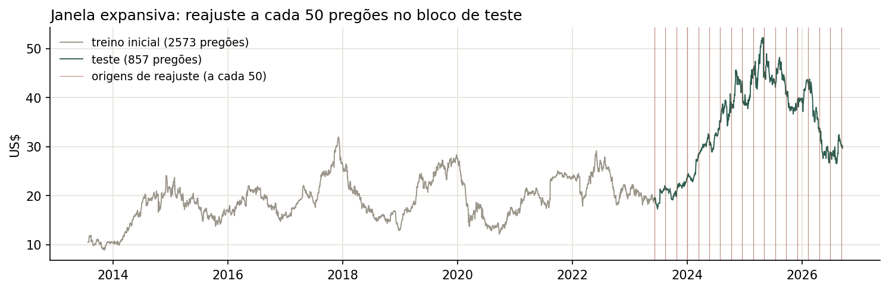
Justificativa e ressalvas
Reajuste a cada 50 pregões. O reajuste diário do SARIMAX e das florestas (768 árvores) seria caro, então o modelo é reestimado 18 vezes ao longo dos três anos de teste.
Os 4 modelos não usam exatamente o mesmo protocolo. As origens e o passo são os mesmos, mas o horizonte efetivo não é:
- SARIMAX e Holt-Winters chamam
forecast(50)na origem e não veem os preços reais dentro do bloco. O erro deles mistura previsões de 1 a 50 pregões. - RF e XGBoost recebem, em cada linha do bloco, features com o preço real da véspera. Na prática, preveem 1 pregão à frente o tempo todo.
- O teste das árvores começa 38 pregões depois e tem 819 pontos, contra 857.
Por isso, cada grupo é comparado com a referência ingênua do seu protocolo: a naive por bloco (repete o último preço conhecido na origem pelos 50 pregões) para os estatísticos, e a persistência de 1 passo (amanhã = hoje) para as árvores. Os baselines dos notebooks (evaluate_baselines) repetem o último preço do treino pelos 857 pregões, sem walk-forward, e por isso dão MAE de ~US$ 15. Eles não servem como régua.
Seleção de hiperparâmetros. SARIMAX (auto_arima/AIC) e Holt-Winters (máxima verossimilhança) foram ajustados só no treino. RF e XGBoost foram otimizados com Optuna usando TimeSeriesSplit de 5 dobras dentro do treino. Nenhum modelo usou o bloco de teste para escolher hiperparâmetros.
Modelos e hiperparâmetros
SARIMAX
| Espaço de busca | auto_arima (pmdarima) em busca stepwise: p, q de 0 a 3 (a partir de (2,1,2)); d escolhido pelo próprio auto_arima (teste KPSS → d = 1); sazonal m = 76 com P, Q ∈ {0, 1} e D = 0; com e sem intercepto. 28 modelos avaliados. |
|---|---|
| Critério | AIC no treino (2.573 pregões, série padronizada) |
| Variáveis externas incluídas | TSN_Close, XLP_Close e CALM_Close do próprio dia, padronizadas. vazamento No auto_arima, as exógenas foram passadas como exogenous=, mas o pmdarima 2.x espera X=. O AIC da busca (−4.672) é muito maior que o do mesmo modelo ajustado com exógenas (−5.579), sinal de que elas não entraram na escolha da ordem. Elas só entram no ajuste e no walk-forward com statsmodels. |
| Configuração final | SARIMAX(2,1,2)(0,0,0)[76] sem intercepto (AIC = −4.672,5 na busca). Termos sazonais com m = 76 pioraram o AIC em todas as combinações (−4.670,6 com P = 1 ou Q = 1). |
Com as exógenas, o modelo ajustado no treino tem AIC = −5.579. A melhora em relação ao AIC da busca (−4.672,5) vem das exógenas (página 10). Os coeficientes AR e MA não são significativos (p entre 0,47 e 0,74) e quase se cancelam (ar.L1 = −0,32 e ma.L1 = +0,31; ar.L2 = +0,64 e ma.L2 = −0,64). Ou seja, o modelo é, na prática, um passeio aleatório com regressão nas exógenas do dia. Os resíduos do ajuste no treino passam no Ljung-Box (p = 0,99 no lag 10 e 0,80 no lag 20).
Teste de sensibilidade: o mesmo ARIMA(2,1,2) sem exógenas, no mesmo walk-forward, teve MAE de US$ 2,316, praticamente igual à naive por bloco (US$ 2,314). Toda a vantagem do SARIMAX vem do preço das exógenas no dia previsto.
Holt-Winters (referência univariada)
| Tendência | Aditiva (não amortecida) |
|---|---|
| Sazonalidade | Testadas aditiva e multiplicativa (com deslocamento para garantir valores positivos, que não foi necessário). Aditiva: AIC = −4.085,4 e MAE de teste de US$ 2,376. Multiplicativa: AIC = −3.987,3 e MAE de US$ 2,514. Escolhida: aditiva. |
| Período sazonal | 76 pregões, o mesmo do SARIMAX |
| Parâmetros de suavização | Estimados por máxima verossimilhança, com inicialização heurística. Aditivo: α = 0,958, β = 0,0006, γ = 0,042. Multiplicativo: α = 0,945, β = 0,0005, γ = 0,055. |
α ≈ 0,96 significa que o nível é praticamente o último preço observado: o Holt-Winters virou um passeio aleatório com um pequeno ajuste sazonal e tendência quase nula (β ≈ 0). É coerente com a página 4 (sazonalidade fraca, diferenças sem autocorrelação). O componente sazonal de 76 pregões acrescenta oscilações que não se repetem fora da amostra, e por isso o MAE fica pior que o da naive por bloco.
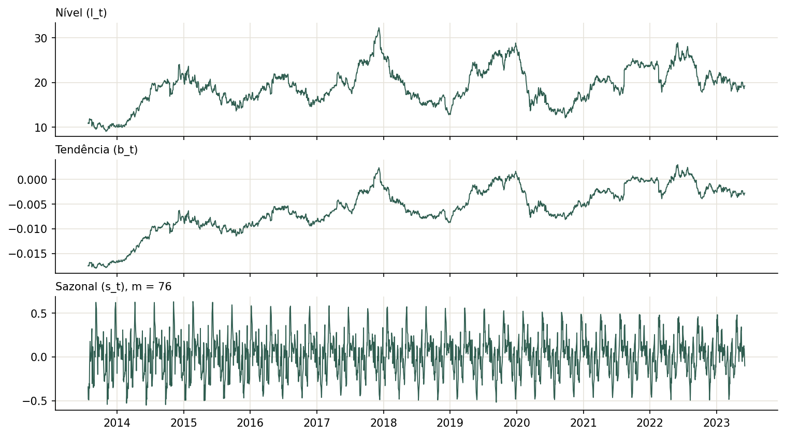
Random Forest
| Espaço de busca | n_estimators ∈ [100, 800]; max_depth ∈ [3, 30]; min_samples_split ∈ [2, 20]; min_samples_leaf ∈ [1, 10]; max_features ∈ {sqrt, log2, 1,0}; bootstrap ∈ {True, False} |
|---|---|
| Método de otimização | Optuna (TPE, semente 42) com 50 tentativas, minimizando o MAE médio de um TimeSeriesSplit de 5 dobras dentro do treino. Melhor MAE de validação cruzada: US$ 0,553. |
| Configuração final | n_estimators = 768, max_depth = 26, min_samples_split = 20, min_samples_leaf = 8, max_features = 1,0, bootstrap = True |
O hiperparâmetro que mais pesou foi max_features: com 1,0 (todas as features em cada divisão), o MAE de CV ficou entre 0,55 e 0,59; com sqrt ou log2, entre 0,83 e 1,06. Com sorteio de poucas colunas, muitas árvores não recebem Close_lag_1, que carrega quase toda a informação. Folhas grandes (8–10) e divisões exigentes (min_samples_split alto) foram as melhores, porque suavizam o ruído diário.
Modelo de especialização — XGBoost Regressor
| Principais hiperparâmetros | n_estimators e learning_rate (número de árvores e tamanho do passo), max_depth, min_child_weight, subsample e colsample_bytree (amostragem de linhas e colunas por árvore), reg_alpha e reg_lambda (regularização L1 e L2) |
|---|---|
| Intervalos testados | n_estimators ∈ [100, 800]; max_depth ∈ [3, 15]; learning_rate ∈ [0,01, 0,3] (log); min_child_weight ∈ [1, 10]; subsample ∈ [0,6, 1,0]; colsample_bytree ∈ [0,6, 1,0]; reg_alpha e reg_lambda ∈ [1e-8, 10] (log) |
| Método de busca | Optuna (TPE, semente 42) com 50 tentativas e o mesmo TimeSeriesSplit de 5 dobras. Melhor MAE de validação cruzada: US$ 0,632. |
| Configuração final | n_estimators = 307, max_depth = 15, learning_rate = 0,0156, min_child_weight = 10, subsample = 0,60, colsample_bytree = 0,997, reg_alpha ≈ 3e-6, reg_lambda ≈ 1e-4 |
A combinação de taxa de aprendizado baixa e só 307 árvores (0,0156 × 307 ≈ 4,8 "passos") deixa o modelo pouco ajustado no sentido do boosting. min_child_weight no máximo (10) e subsample baixo (0,6) também regularizam. Assim como no RF, colsample perto de 1 garante que Close_lag_1 esteja disponível em todas as árvores.
Observação: a célula 10 do notebook 4 mostra outros parâmetros (n_estimators = 134, max_depth = 3) e MAE 0,947. É uma saída antiga de uma execução anterior. Os valores válidos são os da célula 6, que estão salvos em all_modelos.json. O mesmo vale para a célula 18 do notebook 2 (α = 0,0099), que não bate com os parâmetros salvos (α = 0,945).
Resultados comparativos (MAE)
Ranking do notebook 5 (5 - RankFinal.ipynb), feito pela média das posições em MAE, RMSE, MAPE, sMAPE e WAPE (as cinco métricas dão a mesma ordem):
| Modelo | Horizonte | MAE (US$) | Ranking | RMSE | MAPE (%) | MAE na janela comum* |
|---|---|---|---|---|---|---|
| Random Forest | 1 pregão | 1,304 | 1º | 2,070 | 3,44 | 1,304 |
| XGBoost (especialização) | 1 pregão | 1,347 | 2º | 2,094 | 3,61 | 1,350 |
| SARIMAX | 1–50 pregões | 1,836 | 3º | 2,419 | 5,37 | 1,880 |
| Holt-Winters aditivo | 1–50 pregões | 2,376 | 4º | 3,076 | 7,09 | 2,439 |
| Holt-Winters multiplicativo | 1–50 pregões | 2,514 | 5º | 3,385 | 7,42 | 2,586 |
| Referências no mesmo protocolo (calculadas para este relatório) | ||||||
| Persistência 1 passo (amanhã = hoje) | 1 pregão | 0,467 | — | 0,700 | 1,34 | 0,477 |
| Naive por bloco (último preço na origem) | 1–50 pregões | 2,314 | — | 2,954 | 6,90 | 2,374 |
| ARIMA(2,1,2) sem exógenas | 1–50 pregões | 2,316 | — | 2,953 | 6,91 | 2,376 |
* Janela comum: 28/07/2023 a 16/09/2026 (819 pregões), onde todos os modelos têm previsão. Resultados consolidados em pilgrims/all_modelos.json. Previsões dia a dia em pilgrims/previsoes_teste.csv, geradas por pilgrims/gerar_relatorio.py, que reproduz os notebooks com os mesmos hiperparâmetros (o XGBoost reexecutado dá 1,350 contra 1,347 no notebook, uma diferença de não-determinismo).
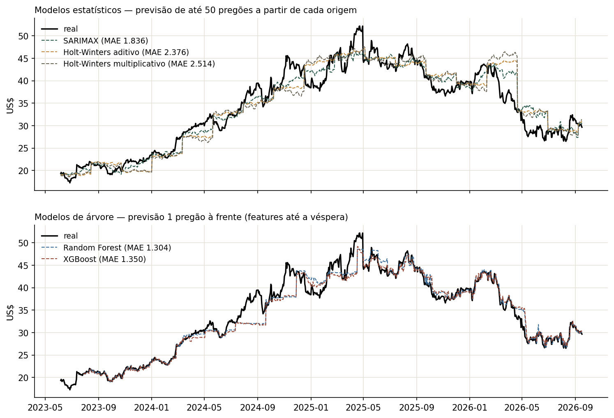
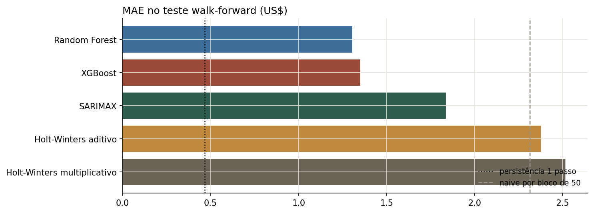
Discussão
O ranking do notebook compara horizontes diferentes. Random Forest e XGBoost aparecem em 1º e 2º, mas preveem 1 pregão à frente, enquanto SARIMAX e Holt-Winters preveem até 50. Com o mesmo horizonte, a ordem não se sustenta: comparados com suas réguas, os modelos ficam assim.
- Árvores: 2,8 vezes piores que a persistência. Repetir o preço de ontem dá MAE de US$ 0,47; o RF erra US$ 1,30 e o XGBoost US$ 1,35. A causa é a mudança de regime: 489 dos 819 pregões de teste ficam acima do maior preço do treino (US$ 31,98), e árvores não extrapolam. Cada folha devolve uma média de preços já vistos, então durante a alta de 2024–2025 a previsão fica presa num patamar até o próximo reajuste incorporar preços mais altos (os "degraus" do painel de baixo). O erro mostra isso: RF com US$ 0,27 em 2023 (dentro da faixa do treino), US$ 1,89 em 2024 e US$ 1,50 em 2025, e de volta a US$ 0,83 em 2026, quando o preço cai para a faixa conhecida.
- SARIMAX: único a bater sua régua, mas por vazamento. O MAE de US$ 1,836 é 21% menor que o da naive por bloco (US$ 2,314). Sem as exógenas, o mesmo ARIMA dá US$ 2,316, exatamente a naive. Como as exógenas são os preços reais de TSN, XLP e CALM no dia previsto (até 50 pregões à frente), o ganho mede o quanto a PPC acompanha o setor no mesmo dia, e não uma capacidade de previsão.
- Holt-Winters: pior que a naive. Com α ≈ 0,96 ele é quase um passeio aleatório, e a sazonalidade de 76 pregões só acrescenta oscilação sem sinal: US$ 2,376 (aditivo) e US$ 2,514 (multiplicativo), contra US$ 2,314 da naive.
Relação com as características da série. Com FT = 0,96, FS ≈ 0 e 1ª diferença sem autocorrelação, o preço se comporta como um passeio aleatório: nenhum componente do próprio passado prevê a variação de amanhã. Os modelos univariados empatam com a naive, as árvores perdem para ela por não extrapolar, e só a informação contemporânea do setor melhora o erro. O SARIMAX erra US$ 0,56 nos 5 primeiros pregões do bloco e US$ 2,27 nos pregões 36–50; a naive vai de US$ 0,62 a US$ 3,02. O erro cresce com o horizonte, como esperado num passeio aleatório.
Nenhuma diferença foi testada estatisticamente. Um teste de Diebold-Mariano entre cada modelo e sua referência ingênua seria o próximo passo.
Análise dos resíduos
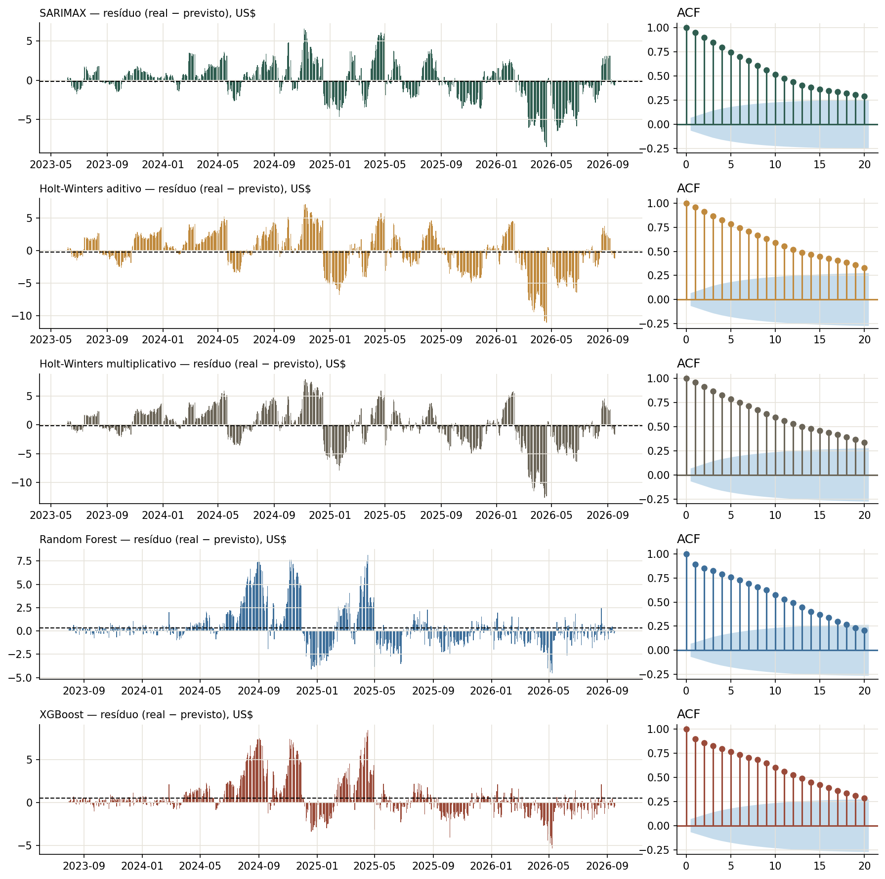
| Modelo | Ljung-Box lag 10 (p-valor) | Ljung-Box lag 20 (p-valor) | Viés (US$) | dp (US$) | ACF lag 1 | Interpretação |
|---|---|---|---|---|---|---|
| Random Forest | 4.589 (< 0,001) | 5.749 (< 0,001) | +0,34 | 2,04 | 0,89 | Autocorrelação forte; prevê abaixo do real (55% dos dias) |
| XGBoost | 4.739 (< 0,001) | 6.234 (< 0,001) | +0,54 | 2,03 | 0,90 | Autocorrelação forte; maior viés (58% dos dias subestimados) |
| SARIMAX | 4.746 (< 0,001) | 5.943 (< 0,001) | −0,14 | 2,42 | 0,95 | Autocorrelação forte; sem viés relevante |
| Holt-Winters aditivo | 5.211 (< 0,001) | 6.922 (< 0,001) | −0,19 | 3,07 | 0,96 | Autocorrelação forte; maior dispersão entre os escolhidos |
| Holt-Winters multiplicativo | 5.275 (< 0,001) | 7.070 (< 0,001) | −0,16 | 3,38 | 0,96 | Autocorrelação forte; maior dispersão |
| Persistência 1 passo | 8,2 (0,61) | 18,2 (0,57) | +0,01 | 0,71 | 0,00 | Referência: ruído branco |
| Naive por bloco | 5.092 (< 0,001) | 6.581 (< 0,001) | +0,02 | 2,96 | 0,95 | Referência dos estatísticos |
Ljung-Box com H0: resíduos sem autocorrelação até o lag indicado. Os notebooks reportam os lags 1 a 12, todos com p-valor 0,000.
Discussão
Autocorrelação. Todos os modelos deixam resíduos fortemente autocorrelacionados (p < 0,001 e ACF de 0,89 a 0,96 no lag 1, decaindo devagar). Os motivos diferem por grupo:
- SARIMAX e Holt-Winters: é consequência do protocolo. Dentro de um bloco de 50 pregões, a previsão é praticamente constante (o último nível conhecido) e o preço real se afasta dela como um passeio aleatório, então o erro de um dia é o erro de ontem mais um choque novo. A naive por bloco tem a mesma assinatura (ACF 0,95). Isso não indica falta de especificação, só que o horizonte é longo para uma série desse tipo. Nos resíduos de 1 passo do ajuste no treino, o SARIMAX passa no Ljung-Box (p = 0,99).
- RF e XGBoost: aqui a autocorrelação é um defeito do modelo. Com previsão de 1 passo, o resíduo deveria ser parecido com o da persistência (ruído branco, p = 0,61). Em vez disso, há meses seguidos com erro positivo (até +US$ 8 em 2024–2025), justamente os períodos com o preço acima da faixa do treino. É a falta de extrapolação aparecendo como erro persistente.
Viés. As árvores subestimam: +US$ 0,34 (RF) e +US$ 0,54 (XGBoost), concentrado na alta de 2024–2025. Os estatísticos têm viés pequeno e negativo (−0,14 a −0,19), resultado de compensações: ficam abaixo do real na subida e acima na queda de 2025–2026.
Variabilidade. O desvio-padrão do erro vai de US$ 2,03 (árvores) a US$ 3,38 (HW multiplicativo) e cresce ao longo do teste, acompanhando o nível e a volatilidade do preço: o MAE do SARIMAX passa de US$ 0,78 em 2023 para US$ 2,77 em 2026. Os resíduos têm caudas pesadas (Q-Q plots nos notebooks) e estão fora da normalidade, principalmente os das árvores, que são assimétricos à direita.
Importância das features
Média do |SHAP value| (TreeExplainer) nos 300 primeiros pregões do teste, com o modelo ajustado no treino inicial (notebooks 3 e 4). As externas aparecem em terracota. O eixo está em escala log, porque o primeiro lugar é de 10 a 1.000 vezes maior que os demais.
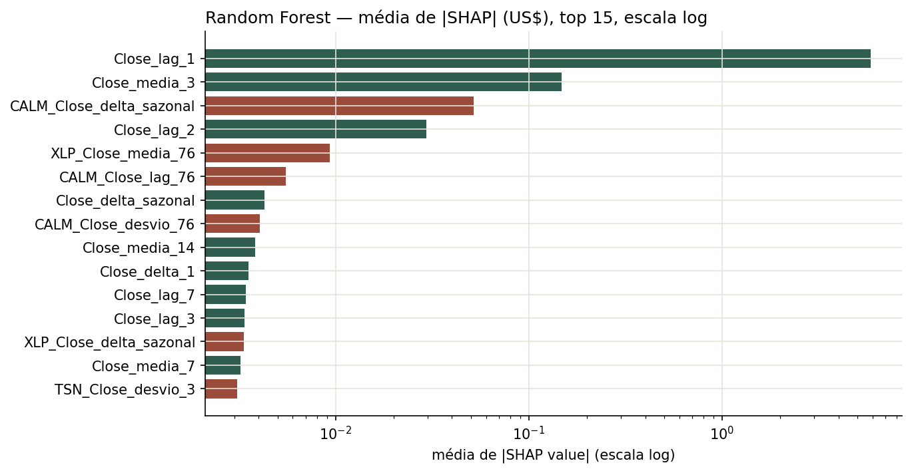
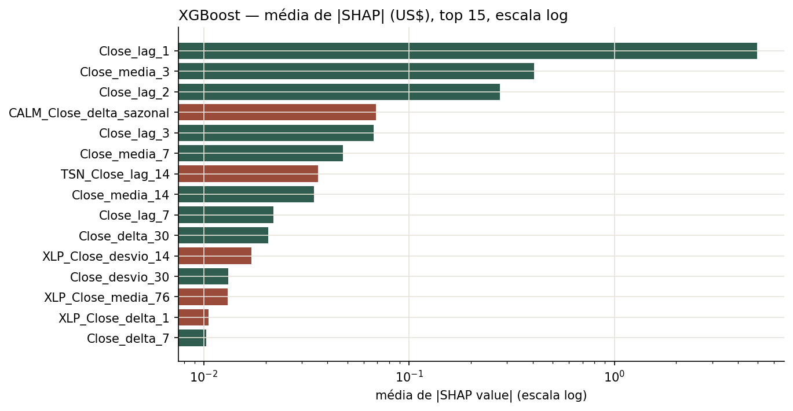
| Feature | Random Forest: média |SHAP| (US$) | XGBoost: média |SHAP| (US$) |
|---|---|---|
Close_lag_1 (preço de ontem) | 5,861 | 4,948 |
Close_media_3 | 0,148 | 0,406 |
Close_lag_2 | 0,029 | 0,277 |
CALM_Close_delta_sazonal (externa) | 0,052 | 0,069 |
XLP_Close_media_76 (externa) | 0,009 | 0,013 |
TSN_Close_lag_14 (externa) | — (fora do top 20) | 0,036 |
As duas árvores são, essencialmente, "o preço de ontem": Close_lag_1 responde por cerca de 95% (RF) e 82% (XGBoost) da soma das importâncias do top 20, e o restante vem de outros resumos do preço recente (média de 3 dias, lag 2). Entre as externas, a mais usada é a variação de 76 pregões da Cal-Maine, com contribuição ~100 vezes menor que a do lag 1.
SARIMAX — coeficientes das variáveis externas
| Variável | Coeficiente (padronizado) | US$ de PPC por US$ da externa | Sinal | Significância | Média |SHAP| (notebook) |
|---|---|---|---|---|---|
TSN_Close | 0,634 (ep 0,016) | +0,18 | + | p < 0,001 | 1,02 |
XLP_Close | 0,499 (ep 0,035) | +0,18 | + | p < 0,001 | 1,60 |
CALM_Close | 0,102 (ep 0,014) | +0,07 | + | p < 0,001 | 0,36 |
| ar.L1 / ar.L2 | −0,32 / +0,64 | — | — | p = 0,73 / 0,48 (não significativos) | — |
| ma.L1 / ma.L2 | +0,31 / −0,64 | — | — | p = 0,74 / 0,47 (não significativos) | — |
Ajuste no treino com as séries padronizadas. A conversão para US$ usa os desvios-padrão do treino (Close 4,31; TSN 14,95; XLP 11,76; CALM 6,63). Como o modelo tem d = 1, os coeficientes valem para as variações: no mesmo dia, cada US$ 1 de alta da Tyson acompanha ~US$ 0,18 de alta da PPC. As três são positivas e muito significativas, coerentes com a correlação das variações diárias (página 2). O SHAP do notebook ordena XLP acima de TSN porque mede a contribuição no nível das exógenas no teste, e o XLP se afastou mais da média do treino.
Holt-Winters — componentes
O Holt-Winters não tem features. O notebook 2 aplica SHAP a uma regressão linear sobre os componentes ajustados e encontra nível 3,44, sazonalidade 0,28 e tendência 0,03. Isso confirma o que os parâmetros já mostram (α ≈ 0,96, β ≈ 0): a previsão é quase só o nível, que é o último preço observado. O gráfico dos componentes está na página 7.
Papel das variáveis externas
Nas árvores, as externas quase não contribuem. Elas entram corretamente defasadas (até t−1), e nessa forma não têm poder preditivo: a variação de ontem da Tyson ou do XLP não antecipa a variação de hoje da PPC, assim como a da própria PPC não antecipa (ACF ≈ 0).
No SARIMAX, elas são todo o ganho, mas não estariam disponíveis. O modelo usa o preço de TSN, XLP e CALM no próprio dia previsto, até 50 pregões depois da origem. Na data da previsão esses valores são desconhecidos, então o MAE de US$ 1,836 não é atingível na prática. Sem elas, o ARIMA empata com a naive (US$ 2,316). Para usar o SARIMAX de forma operacional seria preciso prever as próprias exógenas ou usá-las defasadas, e a evidência das árvores indica que, defasadas, elas não ajudariam.
SHAP mede contribuição para a previsão no conjunto analisado, não causalidade. No SARIMAX, a forte relação contemporânea reflete fatores comuns de mercado e do setor, não uma influência de uma ação sobre a outra.
Conclusão desta base
Melhor modelo
Pelo ranking do notebook, o Random Forest vence (MAE de US$ 1,304), seguido do XGBoost (1,347), SARIMAX (1,836) e Holt-Winters aditivo e multiplicativo (2,376 e 2,514). Comparando cada modelo com uma referência ingênua do mesmo horizonte, porém, nenhum supera a previsão ingênua de forma utilizável:
- RF e XGBoost (1 passo) erram 2,8 vezes mais que repetir o preço de ontem (US$ 0,47).
- Holt-Winters e ARIMA sem exógenas (até 50 passos) empatam com ou perdem para a naive por bloco (US$ 2,31).
- O SARIMAX é o único que bate sua referência (−21%), mas porque usa os preços futuros de TSN, XLP e CALM.
O resultado é coerente com a série: um preço de ação com tendência forte (FT = 0,96), sazonalidade praticamente ausente (FS ≈ 0 no nível e 0,195 na diferença) e variação diária sem autocorrelação. Para esse tipo de série, a previsão ingênua é a referência correta e muito difícil de bater.
Principais limitações
- Horizontes diferentes no mesmo ranking. Árvores com 1 passo e estatísticos com 1–50 passos, em janelas de teste de tamanhos diferentes (819 e 857).
- Vazamento no SARIMAX. As exógenas do dia previsto entram no forecast de todo o bloco.
- Mudança de regime no teste. 489 dos 857 pregões de teste (57%) estão acima do máximo do treino, o que penaliza muito as árvores, que não extrapolam.
- Baselines dos notebooks inadequados. Repetir o último preço do treino por três anos (MAE ~US$ 15) faz qualquer modelo parecer 85–91% melhor. As referências no mesmo protocolo mudam a conclusão.
- Sazonalidade fraca e período arbitrário. O m = 76 é o máximo de uma curva sem pico claro. Os termos sazonais pioraram o AIC do SARIMAX e o erro do Holt-Winters.
- Feriados preenchidos. 124 dias com variação zero artificial ficaram na série.
- Saídas desatualizadas nos notebooks. As células exploratórias do notebook 1 (correlação, ACF, STL) mostram a série diferenciada de uma versão anterior, e algumas saídas dos notebooks 2 e 4 não batem com os resultados salvos. Os números deste relatório foram regenerados com
gerar_relatorio.py.
Decisões metodológicas que precisaram de ajuste
- Período sazonal escolhido pela varredura de STL na 1ª diferença (m = 76), já que pregões diários não têm um ciclo natural.
- Diferenciação decidida pelo auto_arima (d = 1, confirmada por ADF e KPSS) e padronização ajustada só no treino.
- Volume, USD/MXN e OHLC excluídos por correlação desprezível ou por serem do próprio dia.
- Referências ingênuas recalculadas no protocolo walk-forward (persistência de 1 passo e naive por bloco) e ARIMA sem exógenas como teste de sensibilidade, para separar o ganho real do ganho por vazamento.
- Próximos passos sugeridos: prever o retorno (ou o log-preço diferenciado) em vez do nível nas árvores, para resolver a extrapolação; unificar o horizonte (por exemplo, h = 1 para todos, com filtragem 1 passo à frente no SARIMAX e no Holt-Winters); usar no SARIMAX só exógenas conhecidas na origem; e remover os feriados preenchidos.